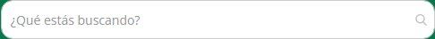

Generado a partir del análisis automatizado de https://menorcoste.com.ar/ el 2026-08-17T19:38:33.670Z.
> Copiá todo lo que sigue y pasáselo a la IA que va a construir la aplicación. Los valores son mediciones reales del sitio del cliente, no estimaciones.
Fuente: brief.example.md
Briefing del cliente
Copiá este archivo como brief.md (o el nombre que quieras) y completalo con lo que pidió el cliente. Se inyecta como sección 0 del prompt, con prioridad sobre todo lo que se infiere del sitio actual.
node analyze.js --file links.txt --brief brief.md
Borrá las secciones que no apliquen. El texto va tal cual al prompt, así que escribí en imperativo y sin ambigüedades.
Cliente y proyecto
Qué pidió textualmente
-
Qué le molesta del sitio actual
-
Qué hay que conservar sí o sí
Alcance
Restricciones técnicas
Prioridades
Ordenar de mayor a menor: rendimiento, accesibilidad, fidelidad visual al original, velocidad de entrega, facilidad de mantenimiento.
1. 2. 3.
Plazos y presupuesto
Notas adicionales
-
> Donde el pedido del cliente contradiga lo medido en el sitio actual, gana el pedido del cliente. Lo que sigue describe el sitio existente como punto de partida y línea base a superar.
Construir una aplicación web equivalente en estructura y propósito a menorcoste.com.ar, con mejor rendimiento, accesibilidad y mantenibilidad. Replicar la arquitectura de información y el tipo de componentes, no copiar textos, imágenes, logos ni marcas del original: usar contenido propio o placeholders.
Contexto del original: Menor Coste Online - Supermercado — Aprovechá los descuentos y promociones. ENVÍOS GRATIS DESDE LA WEB. Productos frescos, todos los días. Promociones bancarias. Medios de pago en efectivo, crédito, débito, cuenta DNI y billeteras virtuales.
Detectado en el original: jquery, bootstrap · Magento, Slick, Owl Carousel, Font Awesome, Google Fonts, Google Tag Manager, Google Analytics, reCAPTCHA
tailwind.config (el original usa CSS propio sobre Bootstrap).Color
| Rol | Valor | Uso en el original |
|---|---|---|
| surface-1 (fondo base) | #f5f5f5 | 156 elementos |
| surface-2 | #ffffff | 105 elementos |
| surface-3 | #02b156 | 88 elementos |
| surface-4 | #08774d | 6 elementos |
| surface-5 | #00a82d | 1 elementos |
| text-1 (texto base) | #333333 | 2643 elementos |
| text-2 | #02b156 | 1620 elementos |
| text-3 | #ffffff | 570 elementos |
| text-4 | #666666 | 468 elementos |
| border-1 | #02b156 | 83 elementos |
| border-2 | #c2c2c2 | 82 elementos |
> Ajustar estos colores donde no lleguen a WCAG AA (ver sección 9) manteniendo la identidad.
Tipografía
| Elemento | font-size | weight | line-height |
|---|---|---|---|
| body | 14px | 400 | 20px |
| h2 | 56px | 700 | 61.6px |
| h3 | 16.8px | 400 | 18.48px |
| p | 14px | 400 | 20px |
| button | 12px | 600 | 18px |
Fuentes propias declaradas: Open Sans (300, font-display: swap) · Open Sans (400, font-display: swap) · Open Sans (600, font-display: swap) · Open Sans (700, font-display: swap). Cargarlas con font-display: swap y preload solo la del hero.
Consistencia del original: 4 familias, 19 tamaños, 4 pesos distintos. Consolidar a una escala de 7-9 pasos.
Espaciado, radios y elevación
rgba(0, 0, 0, 0.3) 0px 5px 8px 0pxDefinir todo esto como variables CSS / tailwind.config y prohibir valores mágicos fuera de la escala.
| Tipo de página | Ruta del original | Secciones | Componentes destacados | Formularios |
|---|---|---|---|---|
| Home | / | 8 | 119 carruseles, precios, agregar al carrito | 80 |
| Listado / categoría | /catalog/category/view/s/mate/id/25750/ | 2 | precios, agregar al carrito | 3 |
| Ficha de producto | /lacteos-y-frescos/productos-de-granja | 2 | precios, agregar al carrito | 5 |
| Contacto / sucursales | /contact | 2 | — | 3 |
| Ayuda / legales | /terminos-y-condiciones | 13 | — | 2 |
| Carrito | /carrousel-3 | 3 | precios, agregar al carrito | 19 |
| Página interna | /almacen/te | 3 | precios, agregar al carrito | 50 |
| Página | /qr | 1 | — | 3 |
| Listado / categoría | /catalog/category/view/s/bazar/id/427/ | 4 | precios, agregar al carrito | 32 |
| Listado / categoría | /catalog/category/view/s/deli/id/26658/ | 3 | precios, agregar al carrito | 43 |
Construir una ruta por cada tipo de página listado, con su layout propio y componentes compartidos.
Listado / categoría — secciones en orden: MATE → div.columns
Ficha de producto — secciones en orden: PRODUCTOS DE GRANJA → div.columns
Contacto / sucursales — secciones en orden: Contáctanos → fieldset.fieldset
Ayuda / legales — secciones en orden: h1 → p → p → p → p → p → p → p → p → p
Carrito — secciones en orden: Carrousel 3 → ol.products.list.items → div#narrow-by-list.filter-options.mage-accordion-disabled
Página interna — secciones en orden: TE → ol.products.list.items → div#narrow-by-list.filter-options.mage-accordion-disabled
Página — secciones en orden: Ver mi credencial virtual
Listado / categoría — secciones en orden: BAZAR → img.image → ol.products.list.items → div#narrow-by-list.filter-options.mage-accordion-disabled
Listado / categoría — secciones en orden: DELI → ol.products.list.items → div#narrow-by-list.filter-options.mage-accordion-disabled
| # | Sección | Encabezado | Alto | Layout | Contenido |
|---|---|---|---|---|---|
| 1 | div.owl-stage | — | 488px (0.54 vh) | block | 15 img, 6 links |
| 2 | div.botones | Promos bancarias | 126px (0.14 vh) | flex, 4 col | 4 img, 4 links |
| 3 | div.productos-destacados.imperdibles.boxed-content | IMPERDIBLES WEB | 600px (0.67 vh) | block | 38 img, 152 links, 78 btn, 39 items |
| 4 | img | — | 291px (0.32 vh) | inline | — |
| 5 | div.productos-destacados.semana.boxed-content | ¡No te pierdas los destacados de la semana! | 600px (0.67 vh) | block | 36 img, 144 links, 74 btn, 37 items |
| 6 | div.banners-categorias | — | 446px (0.5 vh) | grid, 4 col | 4 img, 4 links |
| 7 | div.productos-destacados.combos.boxed-content | ¡Aprovechá los mejores combos! | 600px (0.67 vh) | block | 4 img, 16 links, 8 btn, 5 items |
| 8 | figure | — | 205px (0.23 vh) | block | 2 img, 1 links |
Alto total del home: 4364px (4.8 viewports). 8 bloques de primer nivel.
Navegación principal
position: relative.Footer: 2 columnas, 24 links, 3 redes.
| Componente | Cantidad en el original | Nota de implementación |
|---|---|---|
| prices | 1002 | formateo de moneda centralizado (Intl.NumberFormat es-AR) |
| links | 926 | links internos con el router, externos con rel="noopener" |
| badges | 396 | componente Badge con variantes semánticas |
| inputs | 322 | componente Input con label obligatorio |
| buttons | 169 | un solo componente Button con variantes |
| addToCart | 156 | estado optimista + feedback accesible al agregar |
| carousels | 119 | accesible por teclado, con pausa; considerar scroll-snap en lugar de librería |
| images | 117 | componente de imagen optimizada (AVIF/WebP + sizes) |
| forms | 80 | validación accesible con mensajes asociados al campo |
| tabs | 9 | patrón tablist/tab/tabpanel con navegación por flechas |
| modals | 2 | <dialog> nativo o Radix, con foco atrapado y cierre por Escape |
| search | 1 | input tipo search con role="search" y resultados accesibles |
Variantes de botón detectadas (usar como base del componente Button)
| Variante | Usos | Fondo | Texto | Radio | Padding | Tamaño de fuente | Peso |
|---|---|---|---|---|---|---|---|
| primary | 4 | rgb(2, 177, 86) | rgba(0, 0, 0, 0) | 0px 4px 4px 0px | 0px | 0px | 600 |
| secondary | 1 | rgba(0, 0, 0, 0) | rgb(51, 51, 51) | 3px | 0px | 12px | 600 |
El original tiene 2+ firmas de estilo distintas para botones: consolidar en 3-4 variantes (primary, secondary, ghost, destructive) × tamaños (sm, md, lg).
Formularios del original
(mismo), submit "Iniciar sesión": username (email), password (password), captchaformid (hidden), context (hidden)https://menorcoste.com.ar/checkout/cart/add/uenc/aHR0cHM6Ly9tZW5vcmNvc3RlLmNvbS5hci8~/product/55932/, submit "Agregar": product (hidden), uenc (hidden), form_key (hidden), qty (text)https://menorcoste.com.ar/checkout/cart/add/uenc/aHR0cHM6Ly9tZW5vcmNvc3RlLmNvbS5hci8~/product/55955/, submit "Agregar": product (hidden), uenc (hidden), form_key (hidden), qty (text)https://menorcoste.com.ar/checkout/cart/add/uenc/aHR0cHM6Ly9tZW5vcmNvc3RlLmNvbS5hci8~/product/56001/, submit "Agregar": product (hidden), uenc (hidden), form_key (hidden), qty (text)Carruseles: 8 en el home (custom/desconocido, Owl), con 69/45/45/1/1/1/1/1 slides.
| Ancho | Cards por fila | Links de nav visibles | Alto de header | h1 |
|---|---|---|---|---|
| 360px | 4 | 0 | 171 | 32px |
| 390px | 4 | 0 | 145 | 32px |
| 768px | — | 0 | 172 | 32px |
| 1024px | — | 0 | 169 | 32px |
| 1280px | — | 0 | 109 | 32px |
| 1440px | 4 | 0 | 109 | 32px |
| 1920px | 4 | 0 | 109 | 32px |
Requisito duro: ningún breakpoint entre 320px y 1920px puede tener scroll horizontal.
:hover cambian: color, background-color, background-image, border-bottom-color, border-left-color@keyframes declarados.IntersectionObserver liviano, animando solo transform y opacity.prefers-reduced-motion.lang="es". Formatear moneda y fechas con Intl.alt. En la nueva app, alt es obligatorio (vacío solo si es decorativa).<label for> real, no solo placeholder.h1. Usar exactamente uno por página.:focus-visible claro.width/height (causan CLS). Declarar siempre las dimensiones o usar next/image.srcset/sizes.loading="lazy" fuera del viewport inicial y priority solo para la del hero.Recortes reales de los componentes y zonas descriptos arriba (mismo orden que las tablas de la sección 5):
Carrusel Footer Header Primera sección / hero Botón variante 1 Botón variante 2 Input variante 1

| Métrica | Original | Objetivo |
|---|---|---|
| LCP | sin dato | < 2500 ms |
| CLS | 0.5577 | < 0.1 |
| FCP | 1884 ms | < 1800 ms |
| TTFB | 265 ms | < 800 ms |
| Requests | 418 | < 251 |
| Peso transferido | 1314 KB | < 788 KB |
| Nodos DOM | 6631 | < 3979 |
| Imágenes sin alt | 3 | 0 |
| Inputs sin label | 1 | 0 |
| Fallos de contraste AA | 2 | 0 |
| Overflow horizontal | no | no, en ningún breakpoint |
| Errores de consola | 0 | 0 |
Línea base de Lighthouse del sitio actual (perfil desktop, con throttling — estos son los números a superar):
| Categoría / métrica | Original | Objetivo |
|---|---|---|
| Performance | 67/100 | ≥ 90 |
| Accesibilidad | 85/100 | ≥ 95 |
| Best practices | 96/100 | ≥ 95 |
| SEO | 83/100 | ≥ 95 |
| LCP | 5.9 s | < 2,5 s |
| TBT | 10 ms | < 200 ms |
| CLS | 0.005 | < 0,1 |
| Speed Index | 2.9 s | < 3,4 s |
Oportunidades que Lighthouse marca en el original y que la nueva app no debe repetir:
npm install && npm run dev.No incluir: logos, marcas, fotos ni textos del sitio original. Usar placeholders propios.